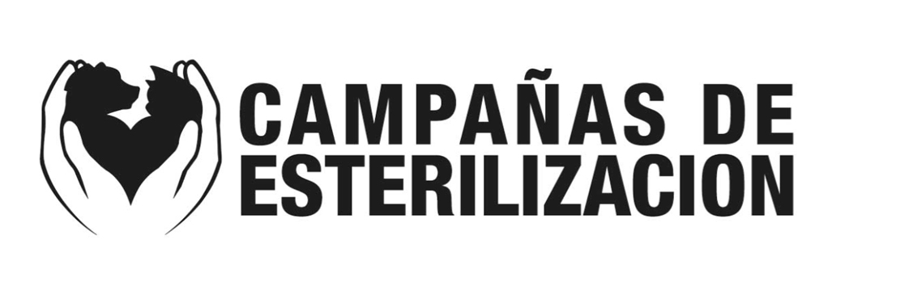
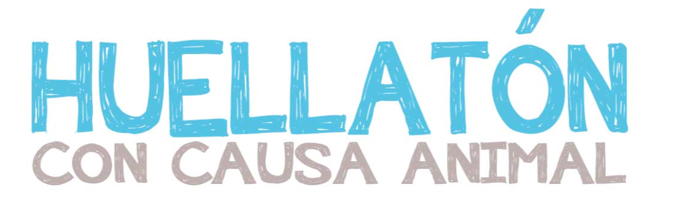

Esta es una de nuestra labor más importante ya que por medio de Campañas de Esterilización Masivas, así como los programas y jornadas permanentes, nos permiten proveer bienestar para muchos animales y evitar miles de crías indeseadas muriendo en las calles por enfermedad, hambre o actos de crueldad. Realizamos campañas con promedio de 300 animales esterilizados donde se le provee el servicio a personas de estrato social bajo que no tienen el poder económico para una cirugía en clínica veterinaria. El resultado ha sido enorme, cada vez, más gente desea esterilizar a sus mascotas.

Huellita con causa A.C. realiza diversos eventos de recaudación para obtener los insumos para realizar esta titánica labor de resolver un problema de salud pública de la que nadie se responsabiliza pero nos compete a todos. En estos eventos la participación de la gente es importante pues son quienes donan Alimento, Medicamentos o Donativo, esta es de la única forma que ha sido posible sustentar a tantos animales en tratamiento y adopción, a su vez nos da la oportunidad de acercarnos a todos los que nos apoyan y son parte importante de esta labor.